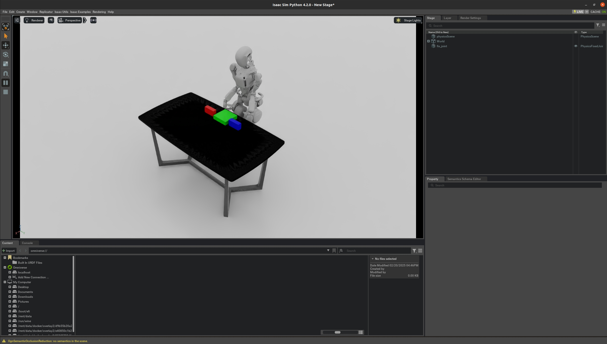

Teleoperating with VisionPro¶
Prerequisites¶
1. Generate a Self-Signed SSL Certificate¶
SSL certificate is used to set up HTTPS communication between simulation and VisionPro. VisionPro should be able to access the host running simulation through network (better within one local network for optimal performance). Instructions for generating the certificate using mkcert is as follows:
# Install Homebrew on Linux
$ /bin/bash -c "$(curl -fsSL https://raw.githubusercontent.com/Homebrew/install/HEAD/install.sh)"
$ (echo; echo 'eval "$(/home/linuxbrew/.linuxbrew/bin/brew shellenv)"') >> ~/.bashrc
$ source ~/.bashrc
# Install mkcert
$ sudo apt-get install build-essential libnss3-tools
$ brew install mkcert
# Generate certs for local address.
$ ip addr | grep inet # Find the IP address Vision Pro can access, assume 192.168.100.101
$ cd GRUtopia && mkdir mkcert && cd mkcert
$ mkcert -install # Generate the local CA and install it in the system trust store.
$ mkcert -cert-file cert.pem -key-file key.pem 192.168.100.101 localhost 127.0.0.1 # Replace 192.168.100.101 with your host IP addr
# Get the location of local CA cert.
$ mkcert -CAROOT
$ ls $(mkcert -CAROOT)
2. Transfer the CA Certificate to VisionPro and Trust It¶
To transfer the certificate to VisionPro, you can start a server and then access it from VisionPro to download the certificate directly.
$ cd $(mkcert -CAROOT) && python -m http.server
Open Settings and install the downloaded profile
Settings > General > About > Certificate Trust Settings. Under “Enable full trust for root certificates”, turn on trust for the certificate.
Settings > Apps > Safari > Advanced > Feature Flags > Enable “WebXR Related Features”
Run GR1 Teleoperation Example¶
To run the example, you need to create a new conda env to run the IK solver process for GR1 first:
$ conda create -n sim-teleop python=3.10
$ conda activate sim-teleop
$ pip install -r GRUtopia/requirements/teleop.txt
$ cd GRUtopia/grutopia_extension/controllers && conda run --no-capture-output -n sim-teleop python gr1_teleop.py
If you see the message “waiting for teleop action…”, it indicates that the solver process has started successfully.
Then open another session with grutopia conda environment, and specify the locations of server cert and key in GRUtopia/grutopia/demo/gr1_teleop.py.
...
teleop = VuerTeleop(
cert_file='./GRUtopia/mkcert/cert.pem', key_file='./GRUtopia/mkcert/key.pem', # Specify locations of your cert and key here
resolution=(720, 1280)
)
...
Then run the demo script:
$ python -m grutopia.demo.gr1_teleop
Once the simulation starts, open Safari on VisionPro and navigate to: https://192.168.100.101:8012?ws=wss://192.168.100.101:8012 (Replace 192.168.100.101 with your own IP address.) Select “Enter VR” to begin operations.

Brief Explanation¶
This section explains how the teleop process works.
Pose collecting logic with VisionPro comes from Open-TeleVision. In each step, the following poses are collected:
The pose of the user’s head.
The pose of the user’s left wrist.
The pose of the user’s right wrist.
The pose of the user’s left hand.
The pose of the user’s right hand.
The poses are used to control robot through a teleop controller, followed by a env step. Once the env step finished, the latest vision is collected from cameras and transferred to VisionPro.
You can refer to GRUtopia/grutopia/demo/gr1_teleop.py for the complete implementation.
teleop = VuerTeleop(cert_file='./mkcert/cert.pem',
key_file='./mkcert/key.pem',
resolution=(720, 1280))
i = 0
while env.simulation_app.is_running():
i += 1
# Get head and wrist pose from vision pro.
# shapes:
# - head_mat: (4, 4)
# - left_wrist_mat: (4, 4)
# - right_wrist_mat: (4, 4)
# - left_hand_mat: (25, 3)
# - right_hand_mat: (25, 3)
head_mat, left_wrist_mat, right_wrist_mat, left_hand_mat, right_hand_mat, begin_move = teleop.step()
# Control robot and step env.
...
# Transfer RGB vision frame to vision pro.
frame = np.hstack((image_left, image_right)).astype(np.uint8)
np.copyto(teleop.img_array, frame)